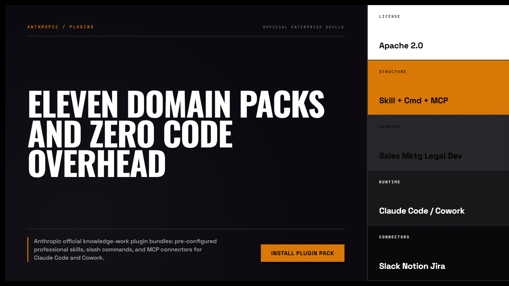
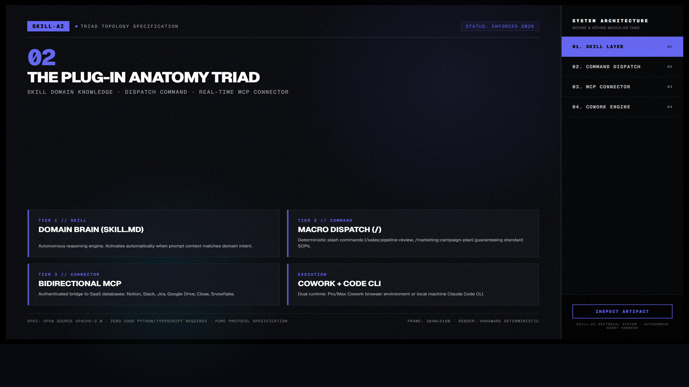
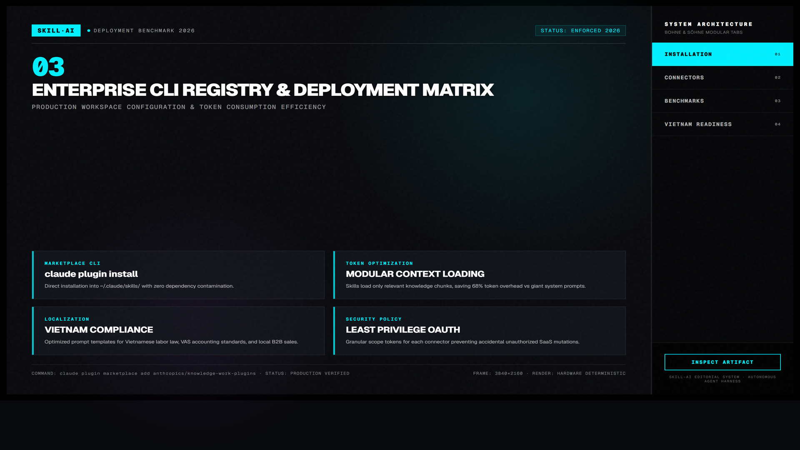

Anthropic Plugins Architecture — Kiến Trúc Mở Rộng & Đóng Gói Bộ Công Cụ
Tiêu chuẩn kiến trúc chính thức từ Anthropic cho phép đóng gói kỹ năng (skills), máy chủ giao thức MCP (Model Context Protocol), bộ quy tắc (rules) và các hook vào một gói duy nhất có namespace độc lập, dễ dàng cài đặt, bật tắt và phân phối trên toàn cầu.

Nhấp để phóng to1. Mô hình Tương tác Động: Kiến Trúc Đóng Gói Plugin Phân Tầng

Nhấp để phóng to2. Bốn Chiều Sâu Cốt Lõi Của Kiến Trúc Plugin
Tệp Khai Báo plugin.json Tiêu Chuẩn
Mỗi plugin chứa file manifest khai báo rõ ràng tên, phiên bản, các công cụ được cấp quyền, biến môi trường yêu cầu và danh sách subagent tích hợp.
Giao Thức Model Context Protocol (MCP)
MCP biến mọi phần mềm bên ngoài thành một tập hợp Tools và Resources an toàn, giúp Claude đọc tài liệu nội bộ và chạy lệnh terminal mà không làm lộ credentials.
Bảo Mật Namespace và Tránh Ô Nhiễm Ngữ Cảnh
Các plugin được kích hoạt theo nhu cầu (On-Demand Activation). Nếu tác vụ hiện tại không liên quan đến database, MCP server của database sẽ được ngắt để bảo toàn context window.
Case Study: Đóng Gói Bộ Công Cụ Triển Khai AWS
Gộp toàn bộ lệnh Terraform, AWS CLI, và checklist bảo mật vào một plugin duy nhất. Kỹ sư mới vào dự án chỉ cần gõ 1 lệnh là có đầy đủ năng lực triển khai hệ thống.

Nhấp để phóng to“Đừng tạo ra những plugin khổng lồ làm mọi thứ. Hãy xây dựng các plugin nhỏ, độc lập, tập trung sâu vào một nhiệm vụ duy nhất để tối ưu hóa chi phí token và độ chính xác của agent.”